Code
library(tidyverse)
library(here)
# library(lubridate)
library(tsibble)
library(feasts)
library(fable)
# library(slider) ### used for moving window average examplelibrary(tidyverse)
library(here)
# library(lubridate)
library(tsibble)
library(feasts)
library(fable)
# library(slider) ### used for moving window average exampleToolik Station (LTER) meteorological data (Source: Source: Shaver, G. 2019. A multi-year DAILY file for the Toolik Field Station at Toolik Lake, AK starting 1988 to present. ver 4. Environmental Data Initiative.) See the Toolik Field Station Environmental Data Center site for more details. This dataset has been modified for purposes of this lab (see code below if you are interested!).
toolik_df <- read_csv(here("data", "toolik_daily.csv"))Notice that (in this case, with the date formatted in the .csv) the date parsed (assumed class) as character. That limits the nice time series features we can use, so we’ll quickly convert it into a tsibble (a time series data frame) so that we can use functions in feasts and fable to explore & analyze it.
Go ahead and try plotting the data as imported.
ggplot(data = toolik_df, aes(x = date, y = daily_air_temp)) +
geom_line()
### Booo we get a warning (only one observation per series)Notice that it doesn’t work - because R doesn’t understand the date is a date until we tell it.
Let’s go ahead and convert it to a tsibble using the as_tsibble() function. First, we’ll need to convert the date to a date class, then convert to a tsibble. We could just keep it as a regular dataframe with a date column and do a lot with that, but the tsibble package gives lots of functionality around time series (thus the ts at the start).
toolik_ts <- toolik_df %>%
mutate(date = lubridate::mdy(date)) %>%
as_tsibble(key = NULL, ### if we had multiple obs on same date from diff locations
index = date) ### time index, here our column is `date`Now let’s plot it:
ggplot(data = toolik_ts, aes(x = date, y = daily_air_temp)) +
geom_line() +
labs(x = "Date",
y = "Mean daily air temperature (Celsius)\n at Toolik Station")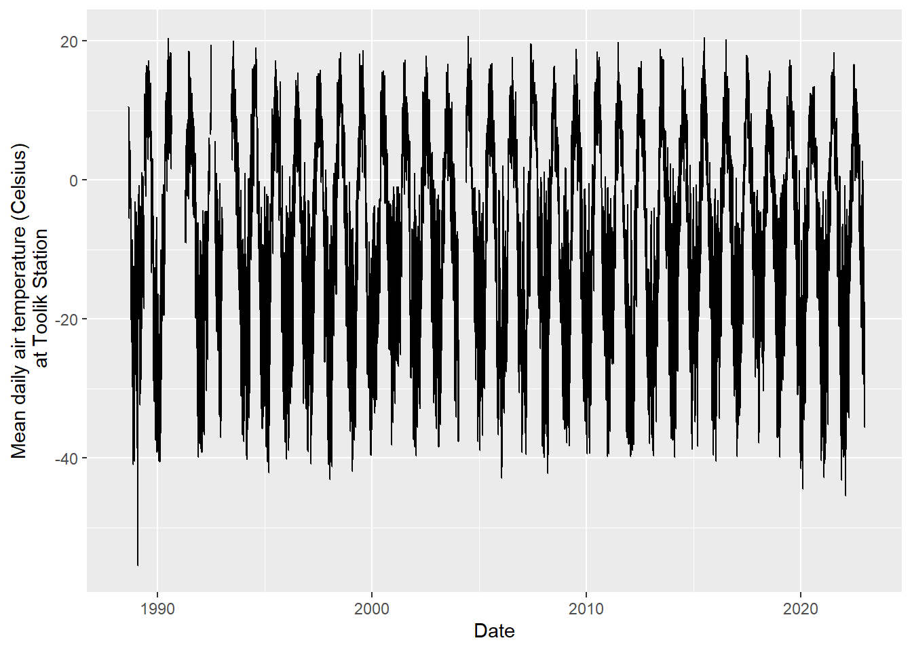
We need to ask some big picture questions at this point, like:
filter_index() to filter by date-times!We can use filter_index() specifically to help us filter data by time spans. See ?filter_index() for more information.
toolik_ts %>%
filter_index("2010-12" ~ "2011-01")# A tsibble: 62 x 5 [1D]
date daily_air_temp daily_precip mean_barom mean_windspeed
<date> <dbl> <dbl> <dbl> <dbl>
1 2010-12-01 -21.8 0.5 928. 4.23
2 2010-12-02 -23.4 0.3 927. 2.36
3 2010-12-03 -17.9 0.2 921. 2.63
4 2010-12-04 -24.0 1.7 919. 3.70
5 2010-12-05 -31.7 0 936. 2.39
6 2010-12-06 -23.5 0 940. 3.07
7 2010-12-07 -21.3 0 936. 3.50
8 2010-12-08 -22.1 0 932. 3.77
9 2010-12-09 -18.7 2.2 930. 3.35
10 2010-12-10 -26.0 0.4 929. 3.37
# ℹ 52 more rowstoolik_ts %>%
filter_index("2006-04-10" ~ "2006-05-15")# A tsibble: 36 x 5 [1D]
date daily_air_temp daily_precip mean_barom mean_windspeed
<date> <dbl> <dbl> <dbl> <dbl>
1 2006-04-10 -18.6 NA NA NA
2 2006-04-11 -13.6 NA NA NA
3 2006-04-12 -22.5 NA NA NA
4 2006-04-13 -24.0 NA NA NA
5 2006-04-14 -24.6 NA NA NA
6 2006-04-15 -22.2 NA NA NA
7 2006-04-16 -19.6 NA NA NA
8 2006-04-17 -25.0 NA NA NA
9 2006-04-18 -21.9 NA NA NA
10 2006-04-19 -26.2 NA NA NA
# ℹ 26 more rowstoolik_ts %>%
filter_index("2020-12-20" ~ .)# A tsibble: 742 x 5 [1D]
date daily_air_temp daily_precip mean_barom mean_windspeed
<date> <dbl> <dbl> <dbl> <dbl>
1 2020-12-20 -39.0 0 909. 0.652
2 2020-12-21 -26.2 0.2 912. 2.25
3 2020-12-22 -7.97 1.5 908. 6.33
4 2020-12-23 -6.79 2.2 901. 2.49
5 2020-12-24 -7.44 0.7 913. 4.51
6 2020-12-25 -8.26 0 918. 3.01
7 2020-12-26 -21.4 0.1 917. 1.59
8 2020-12-27 -20.4 0 916. 1.11
9 2020-12-28 -15.0 0.3 916. 1.20
10 2020-12-29 -16.0 0.1 920. 1.22
# ℹ 732 more rowsindex_by() to aggregate time series by incrementsWe will use index_by() instead of group_by() to do the trick. See ?index_by() to group by a time index, then summarize() to specify what to calculate & return for each interval.
toolik_month <- toolik_ts %>%
index_by(yr_mo = ~yearmonth(.)) %>%
summarize(monthly_mean_temp = mean(daily_air_temp, na.rm = TRUE)) %>%
ungroup() ### just like after group_by()Now let’s take a look:
ggplot(data = toolik_month, aes(x = yr_mo, y = monthly_mean_temp)) +
geom_line() 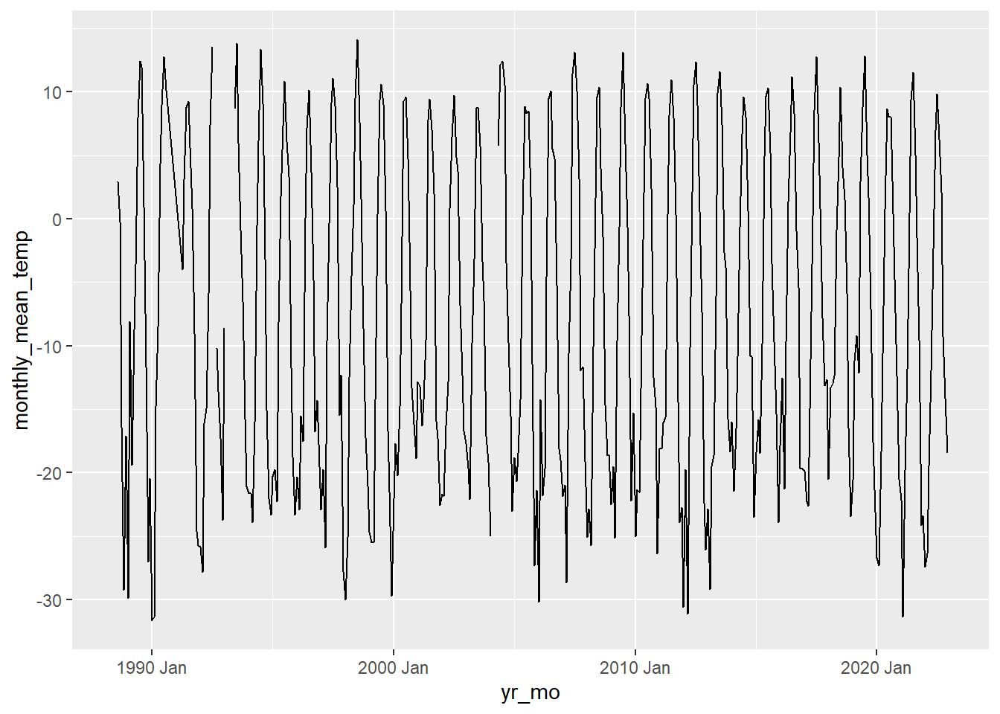
### Or break it up by month:
toolik_month %>%
ggplot(aes(x = year(yr_mo), y = monthly_mean_temp)) +
geom_line() +
facet_wrap(~month(yr_mo, label = TRUE)) +
labs(x = "Year",
y = "Annual mean air temperature (Celsius)",
title = "Toolik Station mean annual air temperature",
subtitle = "1988 - 2018",
caption = "Source: Shaver, G. 2019. A multi-year DAILY weather file
for the Toolik Field Station at Toolik Lake, AK starting
1988 to present. ver 4. Environmental Data Initiative.")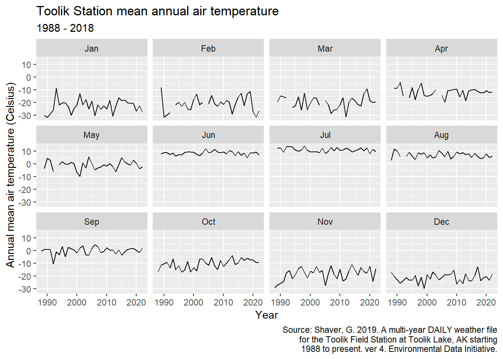
index_by() (not run in lab)Can you do other increments with index_by()? Absolutely! See ?index_by() for grouping options!
Let’s find the yearly average across the dataset:
toolik_annual <- toolik_ts %>%
index_by(yearly = ~year(.)) %>%
summarize(annual_airtemp = mean(daily_air_temp, na.rm = TRUE)) %>%
ungroup()
ggplot(data = toolik_annual, aes(x = yearly, y = annual_airtemp)) +
geom_line()And how about a weekly average?
toolik_weekly <- toolik_ts %>%
index_by(weekly = ~yearweek(.)) %>%
summarize(weekly_airtemp = mean(daily_air_temp, na.rm = TRUE))
ggplot(data = toolik_weekly, aes(x = weekly, y = weekly_airtemp)) +
geom_line()We’ll use the slider package to find moving (or rolling) averages for different window sizes.
The general structure will tend to be something like:
df %>% slide(variable, function, .before = , .after = )
Let’s make a test vector just so we can see how this works:
set.seed(2024)
test<- rnorm(100, mean = 40, sd = 10)
### Show the series based on values +2 and -2 from each observation
### Use ~.x to show the windows
w05 <- slide(test, ~.x, .before = 2, .after = 2)
# w05
### Change that to a function name to actually calculate something for each window
### Note that I add `as.numeric` here, since the outcome is otherwise a list
w05 <- as.numeric(slide(test, mean, .before = 2, .after = 2))
# w05
### Find the mean value of a window with n = 11, centered:
w11 <- as.numeric(slide(test, mean, .before = 5, .after = 5))
# w11
### Find the mean value of a window with n = 19, centered:
w19 <- as.numeric(slide(test, mean, .before = 9, .after = 9))
# w19
### Plot these together:
combo <- data_frame(time = seq(1:100), test, w05, w11, w19) %>%
pivot_longer(names_to = 'series', values_to = 'value', -time)
ggplot(data = combo) +
geom_line(aes(x = time, y = value, color = series)) +
scale_color_manual(values = c('grey70', 'red', 'orange', 'purple')) +
theme_minimal()Now for an example with our Toolik Station data, let’s say we want to find the average value at each observation, with a window that extends forward and backward n days from the observation:
roll_toolik_15 <- toolik_ts %>%
mutate(ma_15d = as.numeric(slide(toolik_ts$daily_air_temp, mean,
.before = 7, .after = 7)))
roll_toolik_61 <- toolik_ts %>%
mutate(ma_61d = as.numeric(slide(toolik_ts$daily_air_temp, mean,
.before = 30, .after = 30)))
ggplot() +
geom_line(data = toolik_ts, aes(x = date, y = daily_air_temp),
size = 0.2, color = "gray") +
geom_line(data = roll_toolik_15, aes(x = date, y = ma_15d),
color = "orange") +
geom_line(data = roll_toolik_61, aes(x = date, y = ma_61d),
color = "blue") +
theme_minimal()To reinforce skills for wrangling, visualizing, and forecasting with time series data, we will use data on US residential energy consumption from January 1973 - September 2023 (from the US Energy Information Administration).
Read in the energy.csv data (use here(), since it’s in the data subfolder).
energy_df <- read_csv(here("data", "energy.csv"))Explore the energy_df object as it currently exists. Notice that there is a column yyyymm that contains the 4-digit year and 2-digit month. Currently, however, R understands that as a character (instead of as a date). Our next step is to convert it into a time series data frame (a tsibble), in two steps:
Here’s what that looks like in a piped sequence:
energy_ts <- energy_df %>%
mutate(date = tsibble::yearmonth(yrmonth)) %>%
as_tsibble(key = sector, index = date)Now that it’s stored as a tsibble, we can start visualizing, exploring and working with it a bit easier.
Let’s take a quick look at our tsibble (for residential energy use, in trillion BTU):
ggplot(data = energy_ts, aes(x = date, y = energy_total, color = sector)) +
geom_line() +
labs(y = "Energy consumption by sector \n (Trillion BTU)")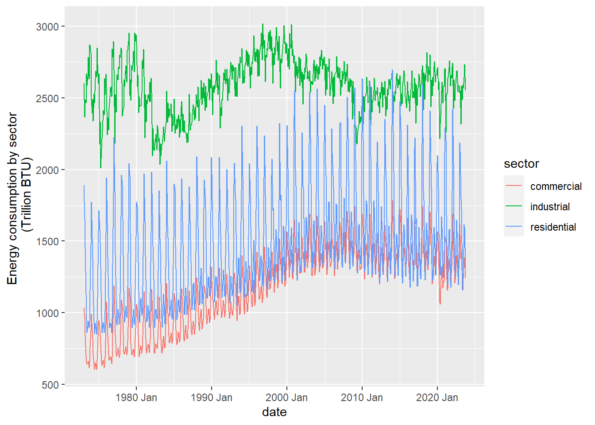
Looks like there are some interesting things happening. Focus on residential:
The big ones to notice quickly here are:
A seasonplot can help point out seasonal patterns, and help to glean insights over the years. We’ll use feasts::gg_season() to create an exploratory seasonplot, which has month on the x-axis, energy consumption on the y-axis, and each year is its own series (mapped by line color).
energy_ts %>%
filter(sector == 'residential') %>%
gg_season(y = energy_total, pal = hcl.colors(n = 9)) +
theme_minimal() +
labs(x = "month",
y = "residential energy consumption (trillion BTU)")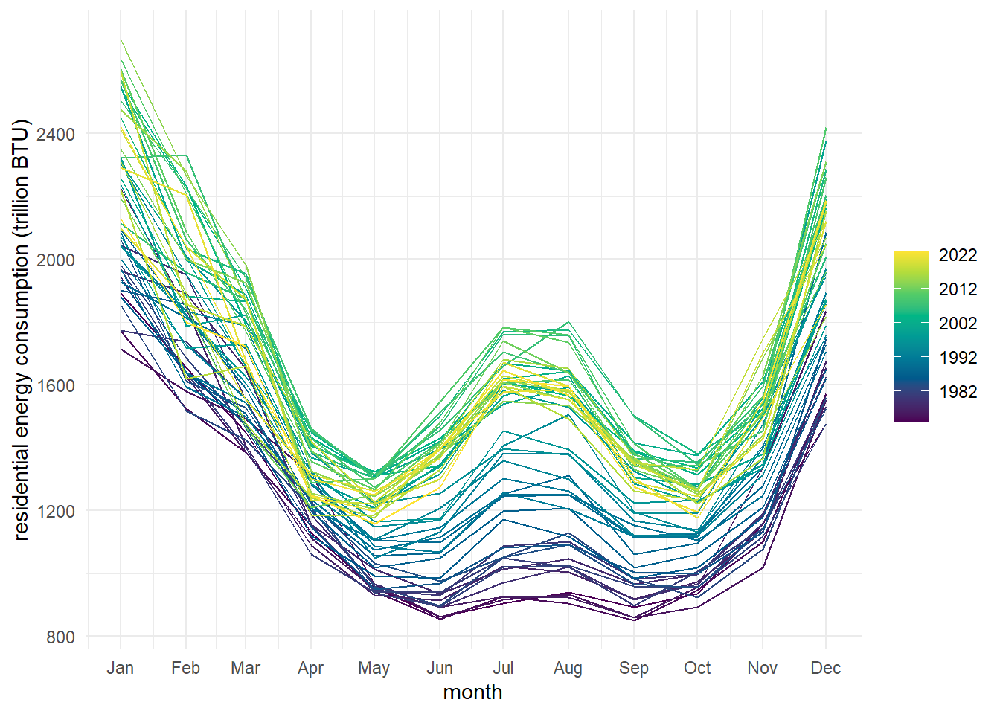
This is really useful for us to explore both seasonal patterns, and how those seasonal patterns have changed over the years of this data (1973 - 2023). What are the major takeaways from this seasonplot?
Let’s explore the data a couple more ways:
energy_ts %>% gg_subseries(energy_total)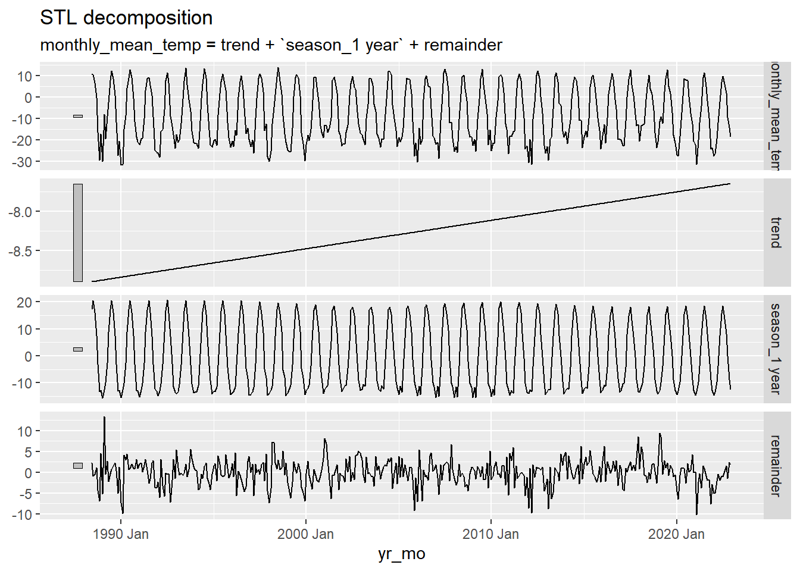
Our takeaway here is similar: there is clear seasonality (higher values in winter months), with an increasingly evident second peak in June/July/August. This reinforces our takeaways from the raw data and seasonplots.
See Rob Hyndman’s section on STL decomposition to learn how it compares to classical decomposition we saw in lecture: “STL is a versatile and robust method for decomposing time series. STL is an acronym for “Seasonal and Trend decomposition using LOESS”, while LOESS is a method for estimating nonlinear relationships.” LOESS (“Locally estimated scatterplot smoothing”) uses a weighted moving average across all points in the dataset, weighted by distance from the point being averaged.
Notice that it allows seasonality to vary over time (a major difference from classical decomposition, and important here since we do see changes in seasonality).
# Find STL decomposition
dcmp <- energy_ts %>%
filter(sector == 'residential') %>%
model(feasts::STL(energy_total ~ season(period = '1 year') + trend(window = 25)))
# View the components
# components(dcmp)
# Visualize the decomposed components
components(dcmp) %>%
autoplot() +
theme_minimal()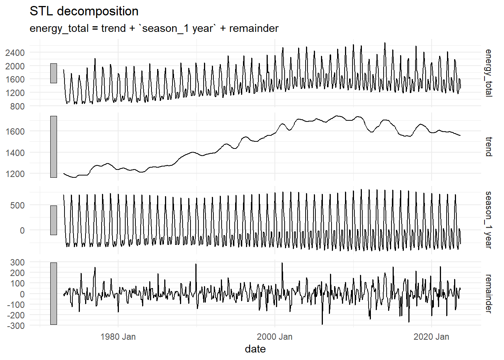
NOTE: those grey bars on the side show relative scale of the total, trend, and seasonality relative to the remainder. A more clear example - note the residuals span a range of about -.5 to +.5, while the other components span larger variation (guesses as to what this data might be?):

We use the ACF to explore autocorrelation (here, we would expect seasonality to be clear from the ACF):
energy_ts %>%
filter(sector == 'residential') %>%
ACF(energy_total) %>%
autoplot()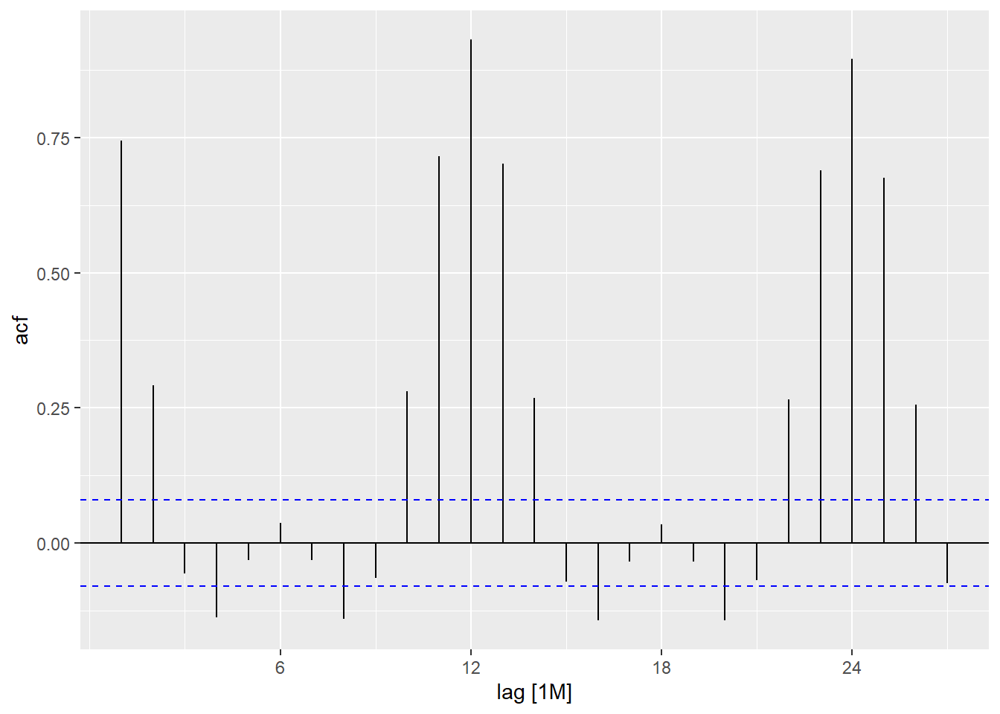
And yep, we see that observations separated by 12 months are the most highly correlated, reflecting strong seasonality we see in all of our other exploratory visualizations.
Note: here we use ETS, which technically uses different optimization than Holt-Winters exponential smoothing, but is otherwise the same (From Rob Hyndman: “The model is equivalent to the one you are fitting with HoltWinters(), although the parameter estimation in ETS() uses MLE.”)
To create the model below, we specify the model type (exponential smoothing, ETS), then tell it what type of seasonality it should assume using the season("") expression, where “N” = non-seasonal (try changing it to this to see how unimpressive the forecast becomes!), “A” = additive, “M” = multiplicative. Here, we’ll say seasonality is multiplicative due to the change in variance over time and also within the secondary summer peak, and trend is additive:
# Create the model:
energy_fit <- energy_ts %>%
# filter_index('2000-01' ~ .) %>%
### try different date windows since trend seems to change
filter(sector == 'residential') %>%
group_by_key(sector) %>%
model(
ets = ETS(energy_total ~ season(method = "M") + trend(method = "A"))
)
# Forecast using the model 5 years into the future:
energy_forecast <- energy_fit %>%
forecast(h = "5 years")
# Plot just the forecasted values (with 80 & 95% CIs):
energy_forecast %>%
autoplot()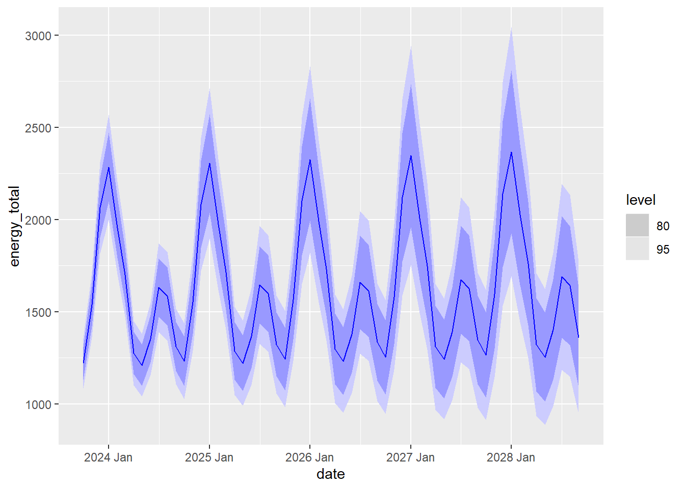
# Or plot it added to the original data:
energy_forecast %>%
autoplot(energy_ts)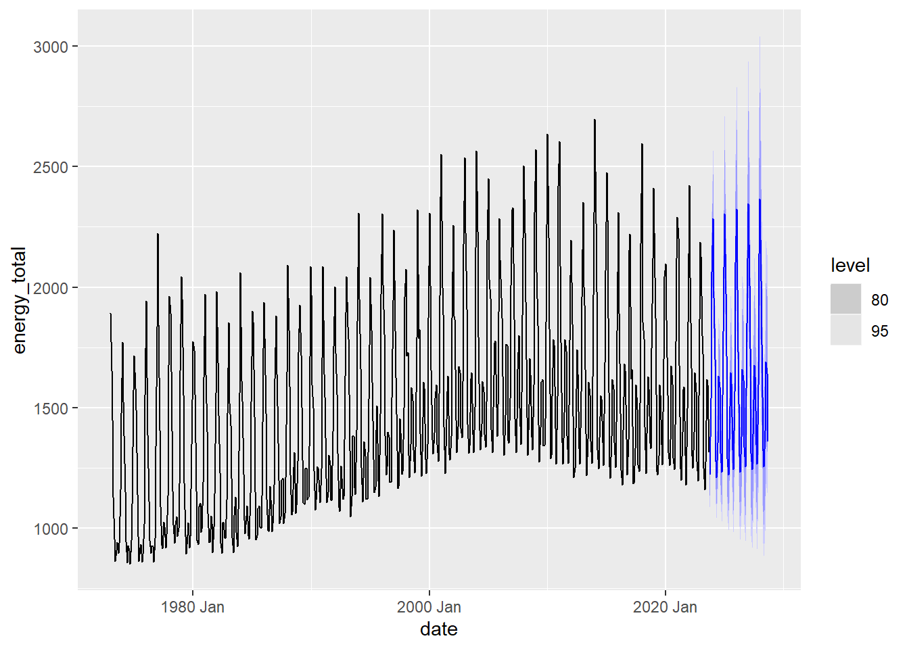
We can use broom::augment() to append our original tsibble with what the model predicts the energy usage would be based on the model. Let’s do a little exploring through visualization.
First, use broom::augment() to get the predicted values & residuals:
# Append the predicted values (and residuals) to original energy data
energy_predicted <- broom::augment(energy_fit)
# Use View(energy_predicted) to see the resulting data frameNow, plot the actual energy values (energy_total), and the predicted values (stored as .fitted) atop them:
ggplot(data = energy_predicted) +
geom_line(aes(x = date, y = energy_total)) +
geom_line(aes(x = date, y = .fitted), color = "red", alpha = .7)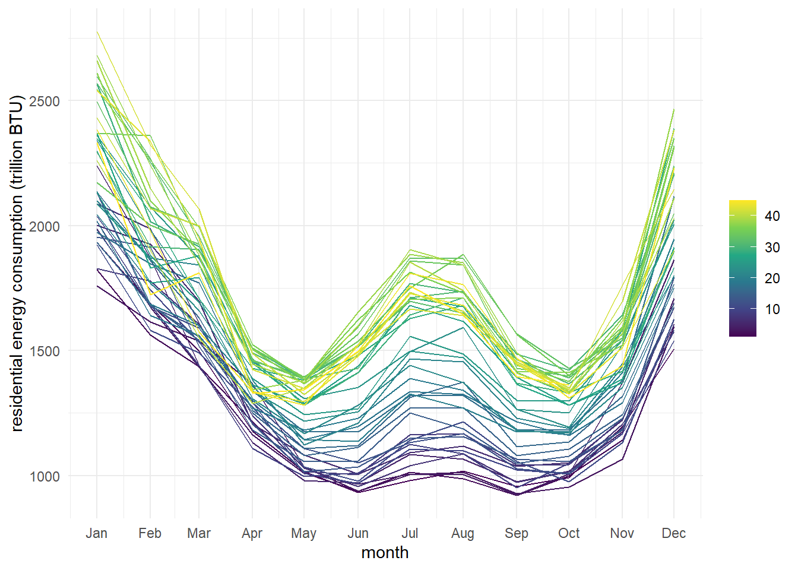
Cool, those look like pretty good predictions! (What if we used data from 2000-2018 to predict 2018-2023 values?)
Now let’s explore the residuals. Remember, some important considerations: Residuals should be uncorrelated, centered at 0, and ideally normally distributed. One way we can check the distribution is with a histogram:
ggplot(data = energy_predicted, aes(x = .resid)) +
geom_histogram()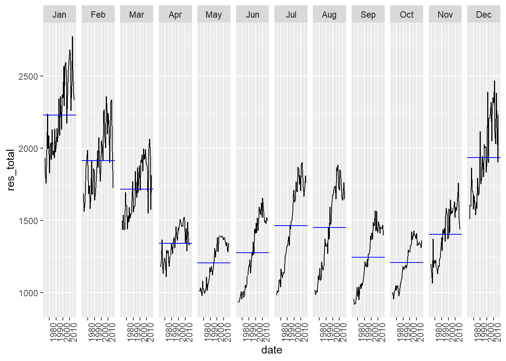
We see that this looks relatively normally distributed, and centered at 0 (we could find summary statistics beyond this to further explore).
There are a number of other forecasting methods and models! You can learn more about ETS forecasting, seasonal naive (SNAIVE) and autoregressive integrated moving average (ARIMA) from Hyndman’s book - those are the models shown below.
# Fit 3 different forecasting models (ETS, ARIMA, SNAIVE):
energy_fit_multi <- energy_ts %>%
filter(sector == 'residential') %>%
model(
ets = ETS(energy_total ~ season("M") + trend("A")),
arima = ARIMA(energy_total), ### requires package `urca` to be installed
snaive = SNAIVE(energy_total)
)
# Forecast 5 years into the future (from data end date)
multi_forecast <- energy_fit_multi %>%
forecast(h = "5 years")
# Plot the 3 forecasts
multi_forecast %>%
autoplot(energy_ts)
# Or just view the forecasts (note the similarity across models):
multi_forecast %>%
autoplot()We can see that all three of these models (exponential smoothing, seasonal naive, and ARIMA) yield similar forecasting results.